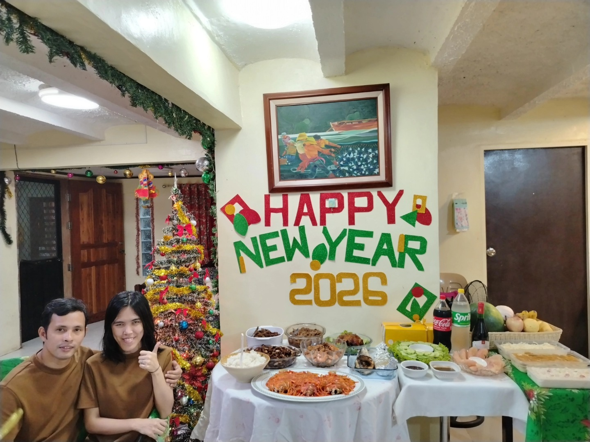
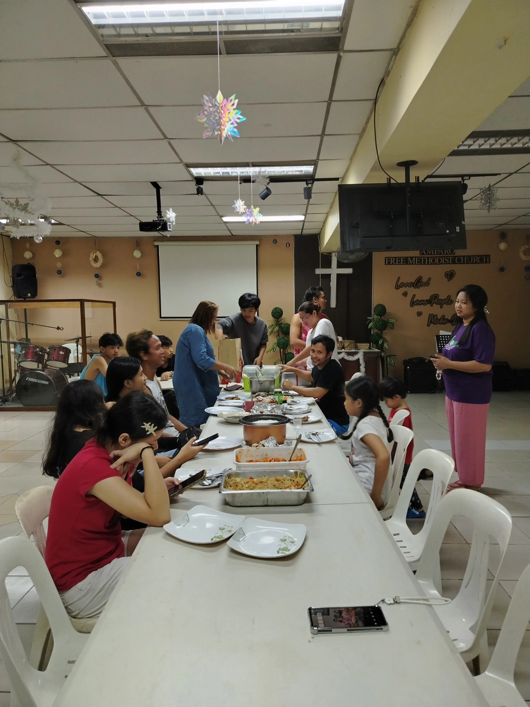
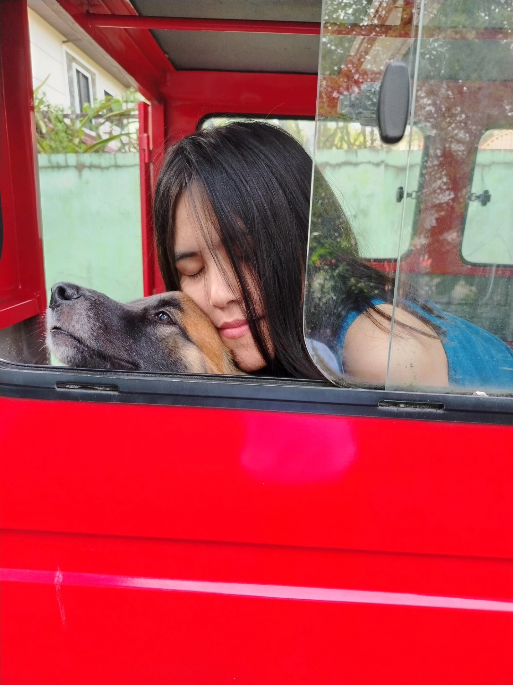
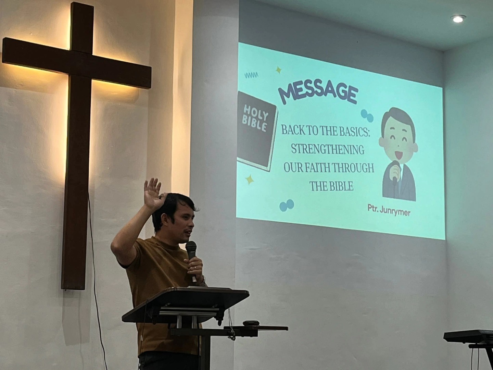

January 2026 Highlights
Reflections from the first month of the year
Moments I want to remember forever



A quiet beginning. Celebrating new year at Cabuyao, Laguna with my loving husband and Aunties (Te Beka and Te Betty)
Moments of gratitude.

Simple joys.
Unexpected blessings.

Growth in stillness.

A hopeful heart.
“See, I am doing a new thing!” – Isaiah 43:19
January felt like the soft opening of a new chapter. Not loud, not rushed — just gentle reminders that beginnings can be sacred and slow.